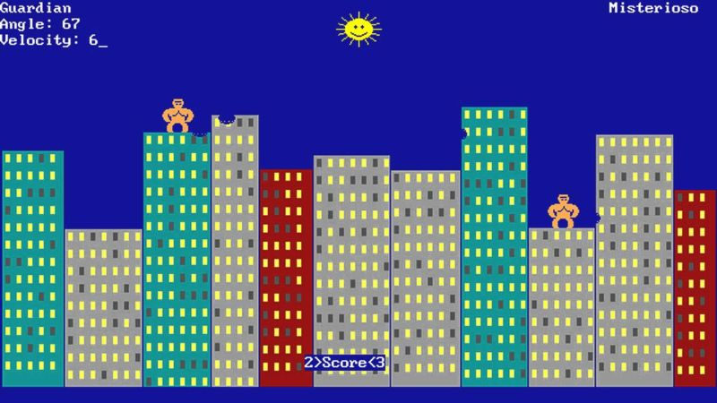
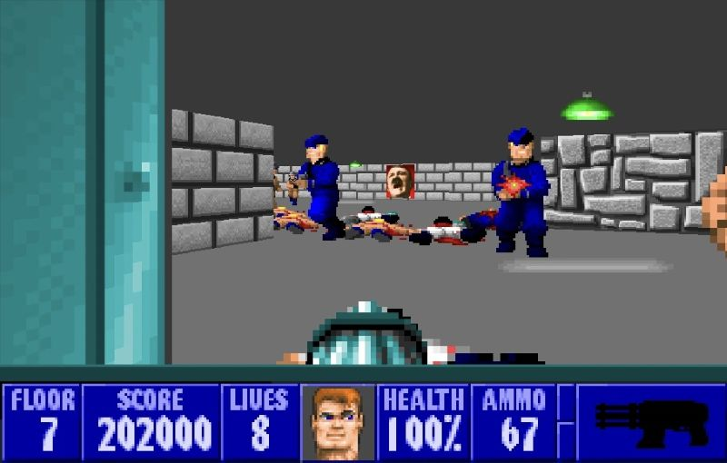
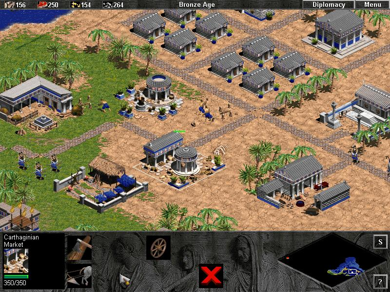

Videojuegos
Inicios
17 de Agosto, 2025El primer acercamiento a los videojuegos no fue precisamente por el NES, sino por las computadoras. La verdad no estoy muy seguro cual sería el primer videojuego que jugué en toda mi vida. Tal vez fue el "gorillas", en la computadora de Chepo, la que aun ni siquiera tenía mouse ni monitor a color. Y aunque era muy divertido experimentar con aquellos juegos como el gorilla, nibbles e incluso el Wolfenstein 3D, para mí, no pasaba de ser una mera curiosaidad y no algo que me haya enganchado demasiado. 
Me gustaba mucho ver cómo el Pollo jugaba Wolfenstein, y jugar gorillas contra el Chepo. pero fué hasta que probé el NES que me quedé maravillado con los videjuegos. no sé por qué pero, los de la computadora no me daban tanto esa sensación mágica y super genial que sí me transmitía el NES. Tal vez porque las computadoras ya eran para mí algo super sorprendente y no esperaba menos de ellas, mientas que el NES fue algo un poco distinto, ya que al conectarlo a la tele y ver los juegos a color, y juegos tan diferentes a los de la computadora, fue grandioso.

Cómo conocí el Age of Empires.
19 de Agosto, 2025Un fin de semana acompañé a Tavo al bordo, porque me dijo que quería buscar un joystick para su computadora, la Compaq con procesador Pentium III que se acababa de comprar, entonces fui con él y anduvimos entre los puestos de juegos hasta que encontró uno, que además de su disco de controladores, incluía un disco lleno de demos de juegos. No era un disco "oficial", era un CD blanco sin marcas ni etiquetas, y venía en un sobre blanco, de papel. Se notaba que era una compilación de demos hecha por quien sabe quién.
Creo que en aquel entonces yo no tenía quemador de CD's así que no le pude hacer una copia al disco, pero sí me lo prestó para estar probando algunos juegos en la computadora verde que teníamos. Me acuerdo que eran muchas carpetas de juegos, pero me di el tiempo de ir probando uno por uno, todos los juegos que venían ahí.
La mayoría no estaban buenos y otros de plano no los pude probar por la poca potencia de mi computadora, pero me topé con el demo de la expansión "Rise of Rome" del Age of Empires 1. Fue mi primera experiencia con un juego de ese tipo, ni siquiera sabía lo que era estrategia en tiempo real, pero quedé fascinado con la mecánica de controlar una civilización, ya sea por individuos o grupos, reunir recursos, crear tropas y enviarlas a la batalla, me voló la cabeza, era genial, yo no tenía idea de que existían juegos así. Me enganchó desde el primer momento y no lo pude soltar.
Tavo me había prestado el disco desde que compró su joystick el fin de semana, pero eran tantos juegos que estuve probando, que encontré el demo de AoE hasta el lunes o martes, porque me acuerdo que empecé a jugarlo en la mañana, como a las 9 más o menos, y cuando se llegó la hora de bañarme para irme al CCH, me seguí jugando y pensé "ahorita me baño rápido", pasó el rato y pensé: "Bueno ya no me baño, nada más me arreglo y me voy", se llegó la hora de salir y yo no me había alistado pero me valió gorro, seguí jugando. Luego llegó la hora en la que ya debería estar llegando al CCH y pensé "Bueno me salto la primera clase, pero llego a la siguiente". Cuando ya eran como las 3 de la tarde entró Mima a mi cuarto a preguntarme si no iba a ir a la escuela, y le dije que sí, que tenía clase a las 6, lo cual era una verdad a medias, porque, aunque sí tenía clase a las 6, no era la única. Así que ya fue como a las 4:30 p.m. más o menos cuando decidí irme. Con ese sentimiento de culpa de haber perdido todo el día jugando en lugar de ir a la escuela.
Pero a partir de ese día no dejé de jugar el demo hasta que lo terminé, era sólo un mapa, pero sí estaba algo difícil, sobre todo para alguien que apenas empieza a familiarizarse con él, lo bueno es que tenía la opción de guardar la partida para continuar después, porque, según recuerdo, me tomó casi una semana terminarlo. Hasta a Paco le gustó y después lo jugaba un rato también. Las siguientes semanas las dediqué a buscar el juego completo en el bordo, hasta que lo conseguí, y no me le despegué en un buen tiempo. De ahí me pasé al AoE II, a sus expansiones y bueno, lo demás ya es historia.
Pero creo que es uno de los pocos juegos de los que tengo al menos vagos recuerdos, y con algunos detalles, sobre cómo fue que lo conocí y lo comencé a jugar. Mi favorito siempre fue el 2, porque, aunque probé el Mithology y el 3, al estar ya hechos como que de polígonos ya los sentí muy raros y cambiados, sobre todo el 3, no digo que no me haya gustado, pero cambió tanto con respecto al 2 que ya no le entré con las mismas ganas. Me abrumó la cantidad de cosas que le añadieron. 
Epoca dorada
Correo del 1 de junio de 2017Una de mis cosas favoritas eran los domingos cuando nos compraban cartuchos (piratotas) de family, un tiempo en el bordo y otro tiempo fue en un puesto de maravillas, saliendo de la misa de en la tarde.
 Aun hasta la fecha, cada domingo
cuando mi foza y yo salimos de misa, tengo esa sensación de emoción por querer llegar
a la casa para jugar algún videojuego. Las tardes lluviosas me recuerdan mucho a
cuando Moisés nos prestaba el Super Nintendo de sus hermanos y jugábamos Donkey
Kong, Stunt Race, Street Fighter 2, Star Fox, etc. Y algunas noches con un clima muy
específico, me recuerdan la primera vez que vimos el final de Super Mario Bros 3, fue
una noche lluviosa, Moisés lo terminó, y creo que era el cumpleaños de alguno de
nosotros, porque recuerdo muy bien haber salido por un plato de tamales después de
que vimos el final jejeje. Pero la que yo considero, nuestra “época dorada” de los
videojuegos, fue cuando tuvimos el Nintendo 64 y los Gameboy color.
Aun hasta la fecha, cada domingo
cuando mi foza y yo salimos de misa, tengo esa sensación de emoción por querer llegar
a la casa para jugar algún videojuego. Las tardes lluviosas me recuerdan mucho a
cuando Moisés nos prestaba el Super Nintendo de sus hermanos y jugábamos Donkey
Kong, Stunt Race, Street Fighter 2, Star Fox, etc. Y algunas noches con un clima muy
específico, me recuerdan la primera vez que vimos el final de Super Mario Bros 3, fue
una noche lluviosa, Moisés lo terminó, y creo que era el cumpleaños de alguno de
nosotros, porque recuerdo muy bien haber salido por un plato de tamales después de
que vimos el final jejeje. Pero la que yo considero, nuestra “época dorada” de los
videojuegos, fue cuando tuvimos el Nintendo 64 y los Gameboy color.
 En aquella
época, pasábamos los días jugando los tres juntos a todo lo imaginable, y
devorábamos las revistas para no perdernos ningún detalle de todo lo nuevo que
salía.
En aquella
época, pasábamos los días jugando los tres juntos a todo lo imaginable, y
devorábamos las revistas para no perdernos ningún detalle de todo lo nuevo que
salía.
 No sé si te acuerdes, que el pollo nos llevaba cada fin de semana el bazar
zaragoza y a veces él nos compraba juegos de 64 o de Gameboy, y a veces nosotros los
comprábamos con nuestros ahorros. Siempre que pienso en aquella época me acuerdo
mucho de las cámaras de GameBoy, del F zero de 64, de Donkey Kong 64, de un juego de
carreras que tuve en GameBoy Color que tenía vibrador integrado, de tu juego de
Wario Land 2, el de Star Wars Racer, el Zelda Awakening DX, etc. Fueron tiempos
geniales en los que aun sentía esa “magia” en el ambiente, la emoción al leer una
revista, al comprar un juego nuevo, o al compartirnos cosas a través del cable link.
No sé si te acuerdes, que el pollo nos llevaba cada fin de semana el bazar
zaragoza y a veces él nos compraba juegos de 64 o de Gameboy, y a veces nosotros los
comprábamos con nuestros ahorros. Siempre que pienso en aquella época me acuerdo
mucho de las cámaras de GameBoy, del F zero de 64, de Donkey Kong 64, de un juego de
carreras que tuve en GameBoy Color que tenía vibrador integrado, de tu juego de
Wario Land 2, el de Star Wars Racer, el Zelda Awakening DX, etc. Fueron tiempos
geniales en los que aun sentía esa “magia” en el ambiente, la emoción al leer una
revista, al comprar un juego nuevo, o al compartirnos cosas a través del cable link.

Revista Club Nintendo
Recuerdo con mucha emoción la época en la que teníamos el 64 y los GameBoy Color, también fué la época en la que casi no nos perdíamos ni un solo número de la revista Club Nintendo. Era asi la unica manera de enterarnos de las novedades de videojuegos, pero era genial, incluso más que ahora que hay mucha mas información y es inmediata, el hecho de hojear la revista, ver las imágenes a color, leer los artículos, las reseñas, etc. Encontré en archive.org varios números de la revista, no serán todos pero, los que hay están muy bien escaneados y se pueden leer perfectamente. Aquí te dejo el enlace al número 12 del año 9, que es el que trae la portada de Banjo-Kazooie, aunque no sé si es ese número al que te referías.